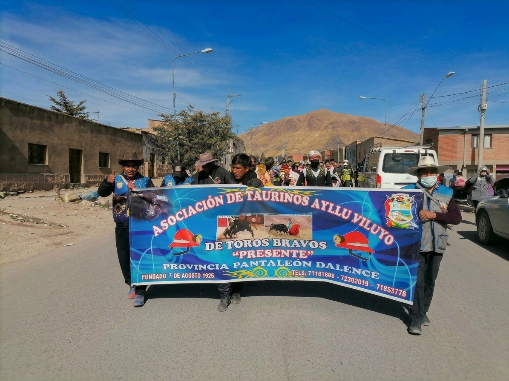

FEB02
Feria de Agronomía y Comparsa
⌖ Viluyo · fecha por confirmarExposición agrícola, feria y participación festiva.
CULTURA · TRADICIÓN · COMUNIDAD
Conoce nuestras comunidades, sus festividades, costumbres y la riqueza de una historia que se transmite entre generaciones.

NUESTRA COMUNIDAD
El Ayllu Viluyo se encuentra en el municipio de Huanuni, departamento de Oruro, Bolivia. Sus comunidades mantienen actividades, celebraciones y costumbres que forman parte de su vida cotidiana.
Explorar las comunidades →CALENDARIO FESTIVO
Un recorrido por celebraciones, ferias y encuentros de la región.
Exposición agrícola, feria y participación festiva.

Feria local y presentación de danzas tradicionales.

Registro de una actividad mencionada para el proyecto.

Recuerdo familiar y homenaje a los seres queridos.
NUESTRAS RAÍCES
Agricultura, ganadería, danzas, ferias y mucho más.

Cultivo de productos andinos y conocimientos del campo.

Cuidado de llamas, alpacas, ovinos y otros animales.

Expresiones de música, movimiento y alegría.

Tejidos, prendas y trabajos manuales.
NUESTRAS COMUNIDADES
Cada comunidad tiene su propia historia, su gente y sus costumbres.
AYLLU VILUYO
Un viaje por nuestras raíces, tradiciones y comunidad.